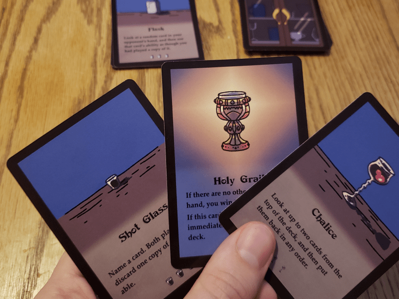
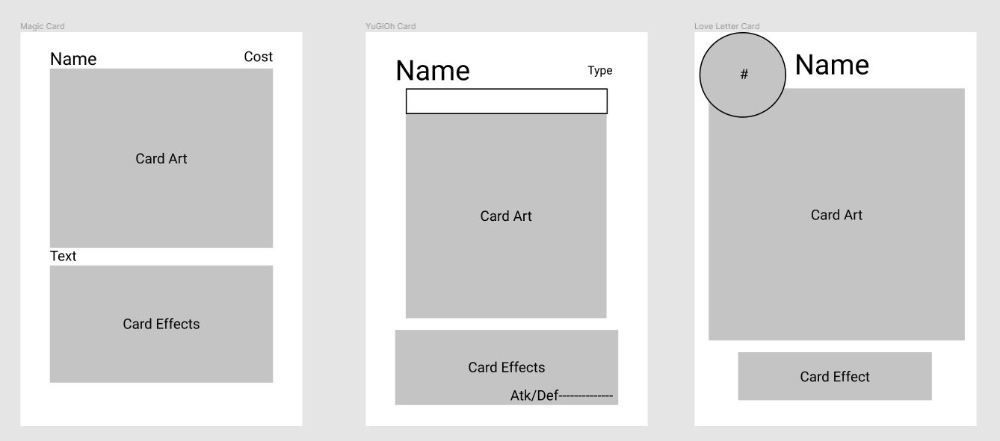

Knights of the Cupboard
Summary
Knights of the Cupboard is a 1v1 card game, designed to be accessible to players of a wide variety of skill levels. I brainstormed, prototyped, playtested and refined the game throughout its development, cumulating in its release on the game crafters' storefront.
See the game Brainstorming
The main idea of the game was to create a game where all players had to use the same deck. This constraint pushed the design towards the game revolving around one particular card in the deck; a card which would decide the game when played. This meant that each of the other cards in the deck had to support this plan, including cards that:
- Replaced itself with a card from the deck.
- Allowed the player to look at some of their opponent's cards.
- "Borrow" a card from their opponent's hand.
- Play some number of cards directly from the deck.

Prototyping
The first step to improving the game was to create a prototype. For this game, that involved writing out card effects on paper, and taping them to a spare deck of cards I had. These paper prototypes would be used to playtest and refine the game.
Playtesting
Playtesting the game allowed me to gather player feedback and discover some areas that needed refinement.
- Replace the card with a different effect to prevent scenarios where the game could not end..
- Make the deck size 2n+1+(card draw effects), where n was each players' hand size, to create uncertainty in endgame scenarios.
- Expand the deck from 19 to 27 cards to allow for an additional round of play before the deck runs out.
- Decrease the number of copies of each card, and increase the number of different card effects to increase the variability of games.
- Change "You may immediately play another card" to "On your next turn, you may play an additional card" to reduce player frustration in unexpected losses.
Card design
To design the layout of the cards, I exmained several other card games including Magic the Gathering, Yu Gi Oh, and Love Letter. I used Figma to break these cards down into their fundamental components, and examine the strengths and weaknesses of each.
Launch
Once the art was complete, the playtests were returning a lot of positive feedback, and I had found a manufacturer and distributor that I liked, I created a store page and launched Knights of the Cupboard into the world. This whole process was extremely rewarding to have progressed through, and I am looking forward to launching my next project in a similar fashion. Thank you for taking the time to have a peek at my thought process, and please do have a look at the final product at the link below.
See the game Share your thoughts